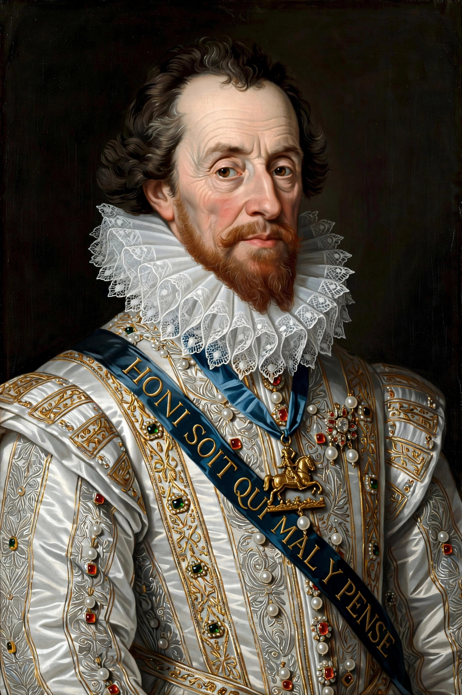

James VI and I
From Wikipedia, the free encyclopedia
 | |
| King of England and Ireland | 24 March 1603 – 27 March 1625 |
|---|---|
| Predecessor | Elizabeth I |
| Successor | Charles I |
| King of Scotland | 24 July 1567 – 27 March 1625 |
| Born | 19 June 1566, Edinburgh Castle, Scotland |
| Died | 27 March 1625 (aged 58), Theobalds House, England |
| Spouse | Anne of Denmark |
| House | Stuart |
| Father | Henry Stuart, Lord Darnley |
| Mother | Mary, Queen of Scots |
James VI and I (James Charles Stuart; 19 June 1566 – 27 March 1625) was King of Scotland as James VI from 24 July 1567 and King of England and Ireland as James I from the union of the Scottish and English crowns on 24 March 1603 until his death in 1625. Although the kingdoms of Scotland and England were individual sovereign states, James was the first monarch to be styled "King of Great Britain", and he worked towards a full political union of the two countries.
James was the son of Mary, Queen of Scots, and her second husband, Henry Stuart, Lord Darnley. He succeeded to the Scottish throne at the age of thirteen months, after his mother was compelled to abdicate in his favour. Four regents governed during his minority, which ended officially in 1578, though he did not gain full control of his government until 1583. In 1603, he succeeded the last Tudor monarch of England and Ireland, Elizabeth I, who died childless. He reigned in all three kingdoms for 22 years, a period known as the Jacobean era, until his death in 1625.
Under James, the "Golden Age" of Elizabethan literature and drama continued, with writers such as William Shakespeare, John Donne, Ben Jonson, and Francis Bacon contributing to a flourishing literary culture. James himself was a prolific writer, authoring works including Daemonologie (1597), The True Law of Free Monarchies (1598), and Basilikon Doron (1599). He sponsored the translation of the Bible into English (later named after him, the Authorized King James Version), and the 1604 revision of the Book of Common Prayer.
Early life in Scotland
James was born on 19 June 1566 at Edinburgh Castle, the only son of Mary, Queen of Scots, and her second husband, Henry Stuart, Lord Darnley. Both Mary and Darnley were great-grandchildren of Henry VII of England through Margaret Tudor, the elder sister of Henry VIII. His birth was celebrated as the first male heir to the Scottish throne in a generation. James was baptised a Catholic on 17 December 1566 in a ceremony at Stirling Castle. His godparents were Charles IX of France, Elizabeth I of England, and Emmanuel Philibert, Duke of Savoy.
Darnley was murdered on 10 February 1567 at Kirk o' Field, Edinburgh. On 24 July 1567, Mary was forced to abdicate and the thirteen-month-old James was proclaimed king, being crowned five days later at the Church of the Holy Rude, Stirling. The sermon at the coronation was preached by John Knox. In accordance with the religious beliefs of most of the Scottish ruling class, James was brought up as a Protestant within the Church of Scotland. He was tutored by the historian and poet George Buchanan, among others, and received a rigorous education in Latin, Greek, theology, and history.
A succession of regents — the Earl of Moray, the Earl of Lennox, the Earl of Mar, and the Earl of Morton — governed Scotland during James's childhood; three of the four died violently. James formally assumed power in 1578, but political infighting among noble factions continued. In 1582, a group of Protestant nobles seized the king in the Raid of Ruthven and held him for nearly a year. James escaped in 1583 and consolidated his authority, notably through the "Black Acts" of 1584 asserting royal control over the Kirk.
Accession in England and the Union of the Crowns
As a great-great-grandson of Henry VII, James was a leading claimant to the English throne. When Elizabeth I died on 24 March 1603, James was proclaimed king in London the same day. He travelled south to take up his new kingdom, famously remarking on the crowds that gathered to see him. The accession was remarkably peaceful and well received, though the journey was shadowed by an outbreak of plague that killed many thousands in London that year.
James styled himself "King of Great Britain" by proclamation in October 1604, and promoted a closer union of his kingdoms, telling the English Parliament in 1607: "Hath not God first united these two kingdoms, both in language, religion, and similitude of manners?" A formal union treaty, however, was resisted by both parliaments, and the full political union of England and Scotland was not achieved until 1707, under his great-granddaughter Anne.
Religion and the Gunpowder Plot
Shortly after his accession, James presided over the Hampton Court Conference (1604) with Puritan clergy; the conference rejected most Puritan demands but commissioned a new translation of the Bible, published in 1611 as the Authorized Version — commonly called the King James Bible — which became one of the most influential texts in the English language. The Millenary Petition, presented by Puritan ministers, had raised hopes of reform that James largely disappointed.
Disappointed Catholics, frustrated by James's failure to relax penal laws, plotted to blow up the Houses of Parliament during the State Opening on 5 November 1605. The Gunpowder Plot was foiled when Guy Fawkes was discovered guarding explosives beneath the House of Lords. The surviving conspirators were tried and executed, and the discovery is still commemorated annually on Bonfire Night.
Foreign policy
James prided himself as a peacemaker — his motto was Beati Pacifici ("Blessed are the peacemakers"). In 1604 he concluded the Treaty of London, ending the long Anglo-Spanish War begun under Elizabeth. His efforts to arrange a marriage between his son Charles and the Spanish Infanta Maria Anna (the "Spanish Match") collapsed amid public hostility in 1623–24. In 1624, under pressure from Charles and the Duke of Buckingham, James reluctantly agreed to war with Spain, though he died before major operations began.
Later reign and death
James's relations with the English Parliament were frequently strained by disputes over royal prerogative, taxation, and his theory of the divine right of kings. His later years were dominated by the influence of favourites, notably Robert Carr, Earl of Somerset, and George Villiers, Duke of Buckingham. The king's health declined after 1619; he suffered from arthritis, gout, and kidney stones. James died at Theobalds House on 27 March 1625 and was buried in Westminster Abbey. He was succeeded by his second son, Charles I; his eldest son, Henry Frederick, Prince of Wales, had died in 1612.
Legacy
James has traditionally been regarded as one of the more intellectual and learned monarchs to sit on either the Scottish or English throne, though historians have debated the practical wisdom of his rule. The Jacobean era saw the flourishing of English drama and literature, the establishment of the first permanent English colonies in North America (Jamestown, Virginia, founded 1607, was named after him), and the Ulster Plantation in Ireland. Modern scholarship has re-evaluated James more favourably, emphasising his success in keeping his kingdoms at peace and his pragmatic management of religious divisions.